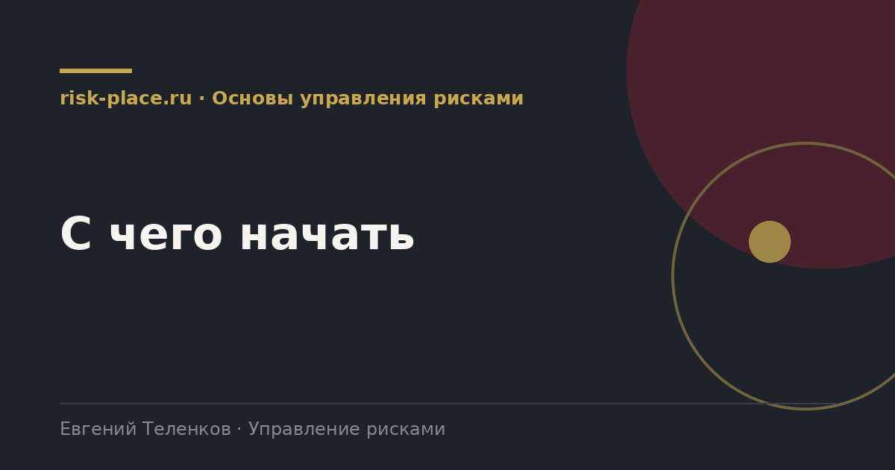

risk-
risk-Понять основание
- Что именно требуется, статья 87.1, уровень листинга, требование акционера или собственная задача управления. От ответа зависит глубина и приоритеты
Главная · Библиотека · Основы управления рисками · С чего начать
Библиотека · Основы управления рисками
Порядок, проверенный на компаниях разного размера. Он намеренно начинается не с документа, а с разговора.

Ориентировочный срок всего пути от трех до четырех месяцев.
Соблазн понятен. Политика это осязаемый результат, ее можно показать акционеру через две недели. Проблема в том, что политика, написанная до понимания процесса, описывает идеальную компанию, а не эту.
Дальше происходит предсказуемое. Документ утверждают, рассылают, и он не совпадает с тем, как люди работают. Расхождение обнаруживается на первой же проверке, и вместо системы компания получает основание для замечаний.
Обратный порядок дает другое. Сначала описан фактический процесс, потом на пилоте проверено, что предлагаемые изменения работают, и только затем закреплено в документе то, что уже действует.
Каждая из них встречается примерно в половине проектов.
Минимальный работающий комплект выглядит так. Описанный процесс на две-три страницы со схемой. Утвержденные шкалы вероятности и влияния с числовыми ориентирами. Реестр на пятнадцать-тридцать существенных рисков с владельцами и планами мер. Карта рисков для комитета. Протокол первого заседания с поручениями и сроками.
Этого достаточно, чтобы система начала жить. Политика, положение о риск-комитете, справочники и автоматизация наращиваются во второй и третий квартал, когда уже понятно, что именно закреплять.
Частые вопросы
Одна форма для любого вопроса
Расскажем о ближайших датах, предложим формат под ваш состав участников и назовем порядок бюджета.
Предпочитаете почту — напишите на info@risk-place.ru. Адрес: Москва, улица Скаковая, 32с2.